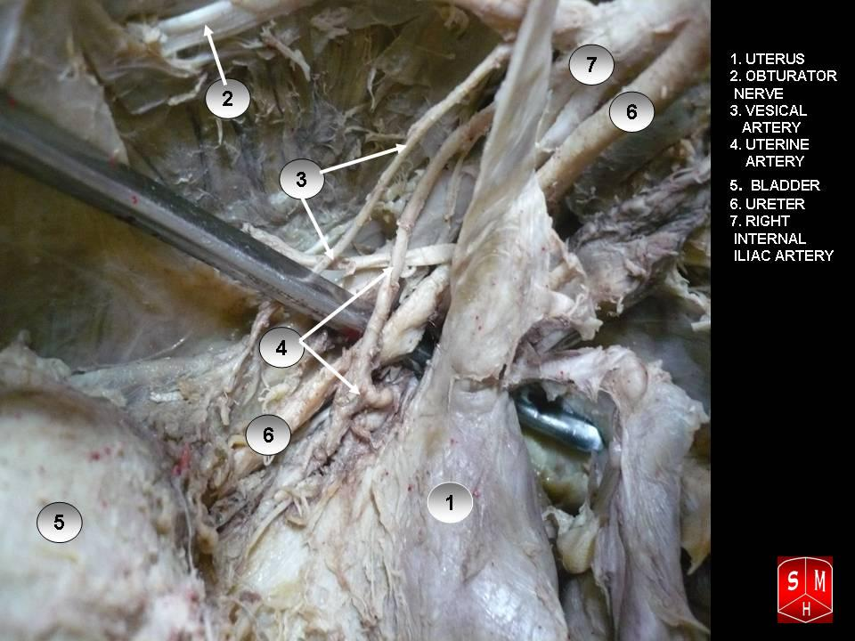

O rio passa por debaixo da ponte. Rio = ureter · Ponte = artéria uterina
ObstetríciaParte B · VasosItens 062–077Mnemônico
Tópico 1
O ureter tem relação íntima com os vasos
O ureter tem relação íntima com os vasos pélvicos — principalmente com a artéria uterina. Sai da pelve renal, percorre trajeto retroperitoneal, e é o tubo muscular que leva urina até a bexiga.
Tópico 2
Entrada na pelve: anterior à ilíaca comum
Ao se aproximar da pelve, o ureter adentra a pelve. O marco: passa sobre a artéria ilíaca comum, antes da divisão em interna e externa, de forma anterior à artéria ilíaca comum (padrão mais comum; há variações).
Marco de entrada: ureter passa por frente da ilíaca comum ao entrar na pelve.
Tópico 3
Sob a uterina, ~2 cm do colo, paramétrio
Dentro da pelve, o ureter passa abaixo da artéria uterina, a cerca de 2 cm laterais ao colo, na região parametrial. Ureter e artéria uterina passam muito próximos.
Tópico 4
O rio passa por debaixo da ponte
Mnemônico canônico desta parte:
rio = ureter (leva água/xixi do rim à bexiga)
ponte = artéria uterina
→ o ureter passa debaixo da artéria uterina.
Forma equivalente: a ponte passa por cima da água / a água passa por debaixo da ponte.
Resumo do trajeto pélvico (versão de prova): adentra a pelve (anterior à ilíaca comum) → passa abaixo da artéria uterina → ~2 cm lateral ao colo, no paramétrio.
Tópico 5
No clampe, o cuidado é o ureter
Em histerectomia, o cuidado central ao abordar a artéria uterina é não lesar o ureter. No clampeamento da artéria uterina, o cuidado é o ureter. Não desprezar: a banca cobra.
(Box lateral, humor de sala: “senão a urologia fica brava com o GAO.”)
Herói — o ureter sob a ponteMapa denso do trajeto ureteral pélvico + cruzamento com a uterina + régua ~2 cm até o colo + selo rio/ponte.Figura-herói
Entrada do ureter — anterior à ilíaca comumIlustração autoral da página; complementa o texto soberano.Esquema autoral

Cruzamento ureter × artéria uterina (dissecção)
Dissecção real: ureter (rio) e uterina (ponte) no mesmo campo.
Anatomical dissection of ureter and uterine artery. By Anatomist90, via Wikimedia Commons, licensed under CC BY-SA 3.0. Source: https://commons.wikimedia.org/wiki/File:Ureter_and_uterine_artery.JPG
Quiz — fixação
No cruzamento clássico de prova, o ureter passa:
Gabarito B.Distância + lado + “abaixo” são o pacote — o rio passa sob a ponte, a cerca de 2 cm do colo, no paramétrio.
(A)inverte cima/baixo e troca o marco (fundo em vez de colo).
(C)o ureter não percorre o canal vaginal — ele é retroperitoneal e parametrial.
(D)o ureter tem relação íntima com a uterina — não é “sem relação”.
Por que cair em A:“ponte por cima” pode virar “ureter por cima” se o mnemônico for decorado sem o eixo.
Ao entrar na pelve, o ureter tipicamente cruza:
Gabarito B.O marco de entrada é anterior à ilíaca comum, antes da divisão em interna/externa.
(A)posterior é o erro que a P11 vai reativar — o ureter passa por frente, não por trás.
(C)veia ovárica é drenagem venosa; não é o marco de entrada do ureter.
(D)o ligamento útero-ovário é corda medial do ovário, não marco de entrada ureteral.
Por que cair em A:“trás” soa mais seguro para um tubo que desce, mas o padrão cobrado é anterior.